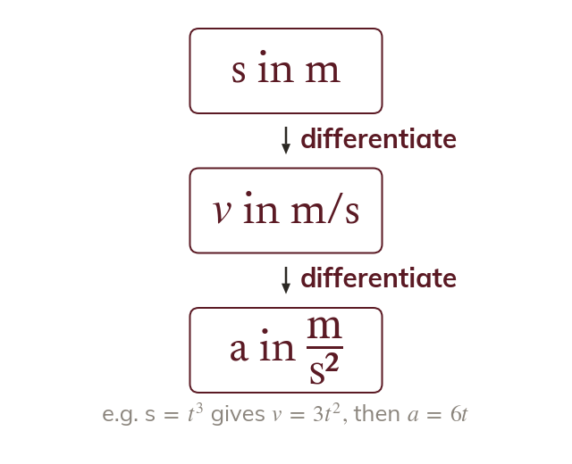

Each rate is a derivative
Velocity is the rate of change of displacement: = ds/dt. Acceleration is the rate of change of velocity: a = dv/dt.
Velocity is the rate of change of displacement, so = ds/dt. Acceleration is the rate of change of velocity, so a = dv/dt.